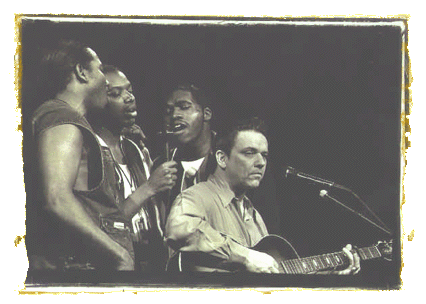

 В 1994 году увидел свет первый сольный альбом Джимми Воэна "Strange Pleasure". Посвященный Стиви Рэю и Альберту Коллинзу, он хранит трогательную и душевную атмосферу встречи старых друзей. Ядро бэнда, который трудился над "Strange Pleasure" составили друзья-соратники Джимми на протяжении многих лет: Joe Sublett (саксофон); Dr. John (пиано, бас, вокал); Denny Freeman (пиано); Richard Hilton (клавишные); Bill Willis (Hammond B-3 орган, пиано); George Rains (барабаны); Lou Ann Barton (вокал). Изюминку фирменного звучания составило принципиальное отсутствие бас-гитары и наличие вокального трио как непременной составляющей аранжировок. Продюсером пластинки выступил Найл Роджерс(Nile Rodgers), работавший над "Family Style". "Strange Pleasure" был принят очень тепло на всех уровнях, и стал номинантом на Грэмми в категории "Лучший современный блюзовый альбом".
В 1997 году вышел второй сольник Джимми "Out There" в основном с теми же персоналиями в главных ролях.
И одним из самых заметных последних событий стало то, что компания Fender начала выпуск именной модели стратокастера, названной "Jimmie Vaughan Signature Tex-Mex Stratocaster".

автор: Алексей Макаров (г.Владимир)
|